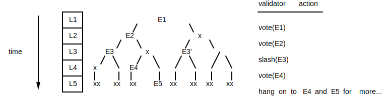
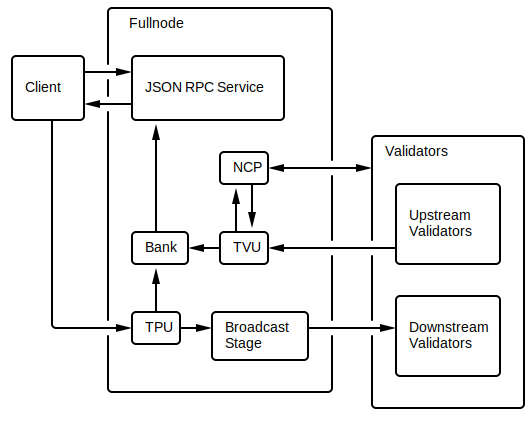
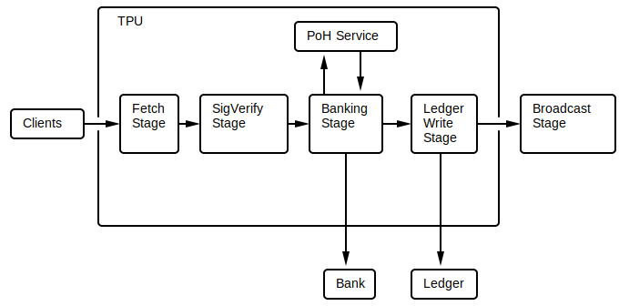
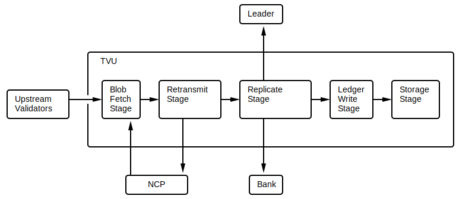
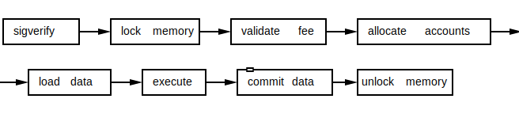

What is Solana?
Solana is the name of an open source project that is implementing a new high-performance, permissionless blockchain. Solana is also the name of a company headquartered in San Francisco that maintains the open source project.
About this Book
This book defines the architecture of Solana, a blockchain built from the ground up for scale. The goal of the architecture is to demonstrate there exists a set of software algorithms that in combination, removes software as a performance bottleneck, allowing transaction throughput to scale proportionally with network bandwidth. The architecture goes on to satisfy all three desirable properties of a proper blockchain: that it not only be scalable, but that it is also secure and decentralized.
The architecture describes a theoretical upper bound of 710 thousand transactions per second (tps) on a standard gigabit network and 28.4 million tps on 40 gigabit. Furthermore, the architecture supports safe, concurrent execution of programs authored in general purpose programming languages such as C or Rust.
Disclaimer
All claims, content, designs, algorithms, estimates, roadmaps, specifications, and performance measurements described in this project are done with the author's best effort. It is up to the reader to check and validate their accuracy and truthfulness. Furthermore, nothing in this project constitutes a solicitation for investment.
History of the Solana Codebase
In November of 2017 Anatoly Yakovenko published a whitepaper describing Proof of History, a technique for keeping time between computers that do not trust one another. From Anatoly's previous experience designing distributed systems at Qualcomm, Mesosphere and Dropbox, he knew that a reliable clock makes network synchronization very simple. When synchronization is simple the resulting network can be blazing fast, bound only by network bandwidth.
Anatoly watched as blockchain systems without clocks, such as Bitcoin and Ethereum, struggled to scale beyond 15 transactions per second worldwide when centralized payment systems such as Visa required peaks of 65,000. Without a clock, it was clear they'd never graduate to being the global payment system or global supercomputer they had dreamed to be. When Anatoly solved the problem of getting computers that don’t trust each other to agree on time, he knew he had the key to bring 40 years of distributed systems research to the world of blockchain. The resulting cluster wouldn't be just 10 times faster, or a 100 times, or a 1,000 times, but 10,000 times faster right out of the gate!
Anatoly's implementation began in a private codebase and was implemented in the C programming language. Greg Fitzgerald, who had previously worked with Anatoly at semiconductor giant Qualcomm Incorporated, encouraged him to reimplement the project in the Rust programming language. Greg had worked on the LLVM compiler infrastructure, which underlies both the Clang C/C++ compiler as well as the Rust compiler. Greg claimed that the language's safety guarantees would improve software productivity and that its lack of a garbage collector would allow programs to perform as well as those written in C. Anatoly gave it a shot and just two weeks later, had migrated his entire codebase to Rust. Sold. With plans to weave all the world's transactions together on a single, scalable blockchain, Anatoly called the project Loom.
On February 13th of 2018, Greg began prototyping the first open source implementation of Anatoly's whitepaper. The project was published to GitHub under the name Silk in the loomprotocol organization. On February 28th, Greg made his first release, demonstrating 10 thousand signed transactions could be verified and processed in just over half a second. Shortly after, another former Qualcomm cohort, Stephen Akridge, demonstrated throughput could be massively improved by offloading signature verification to graphics processors. Anatoly recruited Greg, Stephen and three others to co-found a company, then called Loom.
Around the same time, Ethereum-based project Loom Network sprung up and many people were confused if they were the same project. The Loom team decided it would rebrand. They chose the name Solana, a nod to a small beach town North of San Diego called Solana Beach, where Anatoly, Greg and Stephen lived and surfed for three years when they worked for Qualcomm. On March 28th, the team created the Solana Labs GitHub organization and renamed Greg's prototype Silk to Solana.
In June of 2018, the team scaled up the technology to run on cloud-based networks and on July 19th, published a 50-node, permissioned, public testnet consistently supporting bursts of 250,000 transactions per second. In the most recent release, v0.10 Pillbox, the team published a permissioned testnet running 150 nodes on a gigabit network and demonstrated soak tests processing an average of 200 thousand transactions per second with bursts over 500 thousand. The project was also extended to support on-chain programs written in the C programming language and run concurrently in a safe execution environment called BPF. Next step: going permissionless.
What is a Solana Cluster?
A cluster is a set of computers that work together and can be viewed from the outside as a single system. A Solana cluster is a set of independently owned computers working together (and sometimes against each other) to verify the output of untrusted, user-submitted programs. A Solana cluster can be utilized any time a user wants to preserve an immutable record of events in time or programmatic interpretations of those events. One use is to track which of the computers did meaningful work to keep the cluster running. Another use might be to track the possession of real-world assets. In each case, the cluster produces a record of events called the ledger. It will be preserved for the lifetime of the cluster. As long as someone somewhere in the world maintains a copy of the ledger, the output of its programs (which may contain a record of who possesses what) will forever be reproducible, independent of the organization that launched it.
What are Sols?
A sol is the name of Solana's native token, which can be passed to nodes in a solana cluster in exchange for running an on-chain program or validating its output. The Solana protocol defines that only 1 billion sols will ever exist, but that the system may perform micropayments of fractional sols and that a sol may be split as many as 34 times. The fractional sol is called a lamport in honor of Solana's biggest technical influence, Leslie Lamport. A lamport has a value of approximately 0.0000000000582 sol (2^-34).
Terminology
Teminology Currently in Use
The following list contains words commonly used throughout the Solana architecture.
account
A persistent file addressed by public key and with tokens tracking its lifetime.
block
The entries generated within a slot.
bootstrap leader
The first fullnode to take the leader role.
client
A node that utilizes the cluster.
cluster
A set of fullnodes maintaining a single ledger.
control plane
A gossip network connecting all nodes of a cluster.
data plane
A multicast network used to efficiently validate entries and gain consensus.
entry
An entry on the ledger either a tick or a transactions entry.
finality
The wallclock duration between a leader creating a tick entry and recognizing a supermajority of ledger votes with a ledger interpretation that matches the leader's.
fork
A ledger derived from common entries but then diverged.
fullnode
A full participant in the cluster either a leader or validator node.
fullnode state
The result of interpreting all programs on the ledger a given tick height. It includes at least the set of all accounts holding nonzero native tokens.
genesis block
The first block of the ledger.
hash
A digital fingerprint of a sequence of bytes.
instruction
The smallest unit of a program that a client can include in a transaction.
keypair
A public key and coesponding secret key.
lamport
A fractional native token with the value of approximately 0.0000000000582 sol (2^-34).
leader
The role of a fullnode when it is appending entries to the ledger.
leader schedule
A sequence of fullnode public keys. The cluster uses the leader schedule to determine which fullnode is in the leader at any moment in time.
ledger
A list of entries containing transactions signed by clients.
ledger vote
A hash of the fullnode's state at a given tick height.
lockout
The duration of time in which a fullnode is unable to vote on another fork.
native token
The token used to track work done by nodes in a cluster.
node
A computer particpating in a cluster.
node count
The number of fullnodes participating in a cluster.
program
The code that interprets instructions.
public key
The public key of a keypair.
replicator
A type of client that stores copies of segments of the ledger.
secret key
The private key of a keypair.
slot
The time in which a single leader may produce entries.
sol
The native token tracked by a cluster recognized by the company Solana.
stake
Tokens forfeit to the [cluster](#cluster] if malicious fullnode behavior can be proven.
tick
A ledger entry that estimates wallclock duration.
tick height
token
A scarce, fungible member of a set of tokens.
tps
Transactions per second.
transaction
One or more instructions signed by the client and executed atomically.
transactions entry
A set of transactions that may be executed in parallel.
validator
The role of a fullnode when it is validating the leader's latest entries.
Terminology Reserved for Future Use
The following keywords do not have any functionality but are reserved by Solana for potential future use.
blob
A fraction of a block; the smallest unit sent between fullnodes.
curio
A scarce, non-fungible member of a set of curios.
epoch
The time in which a leader schedule is valid.
light client
A type of client that can verify it's pointing to a valid cluster.
mips
Millions of instructions per second.
thin client
A type of client that trusts it is communicating with a valid cluster.
Getting Started
The Solana git repository contains all the scripts you might need to spin up your own local testnet. Depending on what you're looking to achieve, you may want to run a different variation, as the full-fledged, performance-enhanced multinode testnet is considerably more complex to set up than a Rust-only, singlenode testnode. If you are looking to develop high-level features, such as experimenting with smart contracts, save yourself some setup headaches and stick to the Rust-only singlenode demo. If you're doing performance optimization of the transaction pipeline, consider the enhanced singlenode demo. If you're doing consensus work, you'll need at least a Rust-only multinode demo. If you want to reproduce our TPS metrics, run the enhanced multinode demo.
For all four variations, you'd need the latest Rust toolchain and the Solana source code:
First, install Rust's package manager Cargo.
$ curl https://sh.rustup.rs -sSf | sh
$ source $HOME/.cargo/env
Now checkout the code from github:
$ git clone https://github.com/solana-labs/solana.git
$ cd solana
The demo code is sometimes broken between releases as we add new low-level features, so if this is your first time running the demo, you'll improve your odds of success if you check out the latest release before proceeding:
$ TAG=$(git describe --tags $(git rev-list --tags --max-count=1))
$ git checkout $TAG
Configuration Setup
The network is initialized with a genesis ledger and leader/validator configuration files. These files can be generated by running the following script.
$ ./multinode-demo/setup.sh
Drone
In order for the leader, client and validators to work, we'll need to spin up a drone to give out some test tokens. The drone delivers Milton Friedman-style "air drops" (free tokens to requesting clients) to be used in test transactions.
Start the drone on the leader node with:
$ ./multinode-demo/drone.sh
Singlenode Testnet
Before you start a fullnode, make sure you know the IP address of the machine you want to be the leader for the demo, and make sure that udp ports 8000-10000 are open on all the machines you want to test with.
Now start the server in a separate shell:
$ ./multinode-demo/leader.sh
Wait a few seconds for the server to initialize. It will print "leader ready..." when it's ready to receive transactions. The leader will request some tokens from the drone if it doesn't have any. The drone does not need to be running for subsequent leader starts.
Multinode Testnet
To run a multinode testnet, after starting a leader node, spin up some validator nodes in separate shells:
$ ./multinode-demo/validator.sh
To run a performance-enhanced leader or validator (on Linux), CUDA 10.0 must be installed on your system:
$ ./fetch-perf-libs.sh
$ SOLANA_CUDA=1 ./multinode-demo/leader.sh
$ SOLANA_CUDA=1 ./multinode-demo/validator.sh
Testnet Client Demo
Now that your singlenode or multinode testnet is up and running let's send it some transactions!
In a separate shell start the client:
$ ./multinode-demo/client.sh # runs against localhost by default
What just happened? The client demo spins up several threads to send 500,000 transactions to the testnet as quickly as it can. The client then pings the testnet periodically to see how many transactions it processed in that time. Take note that the demo intentionally floods the network with UDP packets, such that the network will almost certainly drop a bunch of them. This ensures the testnet has an opportunity to reach 710k TPS. The client demo completes after it has convinced itself the testnet won't process any additional transactions. You should see several TPS measurements printed to the screen. In the multinode variation, you'll see TPS measurements for each validator node as well.
Public Testnet
In this example the client connects to our public testnet. To run validators on the testnet you would need to open udp ports 8000-10000.
$ ./multinode-demo/client.sh --network $(dig +short testnet.solana.com):8001 --identity config-private/client-id.json --duration 60
You can observe the effects of your client's transactions on our dashboard
Linux Snap
A Linux Snap is available, which can be used to easily get Solana running on supported Linux systems without building anything from source for evaluation. Note that CUDA is not supported by the Snap so performance will be limited.
The edge Snap channel is updated daily with the latest
development from the master branch. To install:
$ sudo snap install solana --edge --devmode
Once installed the usual Solana programs will be available as solona.* instead
of solana-*. For example, solana.fullnode instead of solana-fullnode.
Update to the latest version at any time with:
$ snap info solana
$ sudo snap refresh solana --devmode
Daemon Support
The snap supports running a leader, validator or leader+drone node as a system daemon.
Run sudo snap get solana to view the current daemon configuration. To view
daemon logs:
- Run
sudo snap logs -n=all solanato view the daemon initialization log - Runtime logging can be found under
/var/snap/solana/current/leader/,/var/snap/solana/current/validator/, or/var/snap/solana/current/drone/depending on whichmode=was selected. Within each log directory the filecurrentcontains the latest log, and the files*.s(if present) contain older rotated logs.
Disable the daemon at any time by running:
$ sudo snap set solana mode=
Runtime configuration files for the daemon can be found in
/var/snap/solana/current/config.
Leader Daemon
$ sudo snap set solana mode=leader
rsync must be configured and running on the leader.
- Ensure rsync is installed with
sudo apt-get -y install rsync - Edit
/etc/rsyncd.confto include the following
[config]
path = /var/snap/solana/current/config
hosts allow = *
read only = true
- Run
sudo systemctl enable rsync; sudo systemctl start rsync - Test by running
rsync -Pzravv rsync://<ip-address-of-leader>/config solana-configfrom another machine. If the leader is running on a cloud provider it may be necessary to configure the Firewall rules to permit ingress to port tcp:873, tcp:9900 and the port range udp:8000-udp:10000
To run both the Leader and Drone:
$ sudo snap set solana mode=leader+drone
Validator daemon
$ sudo snap set solana mode=validator
By default the validator will connect to testnet.solana.com, override the leader IP address by running:
$ sudo snap set solana mode=validator leader-address=127.0.0.1 #<-- change IP address
It's assumed that the leader will be running rsync configured as described in
the previous Leader daemon section.
Programming Model
With the Solana runtime, we can execute on-chain programs concurrently, and written in the client’s choice of programming language.
Client Interactions with Solana

As shown in the diagram above an untrusted client, creates a program in the language of their choice, (i.e. C/C++/Rust/Lua), and compiles it with LLVM to a position independent shared object ELF, targeting BPF bytecode, and sends it to the Solana cluster. Next, the client sends messages to the Solana cluster, which target that program. The Solana runtime loads the previously submitted ELF and passes it the client's message for interpretation.
Persistent Storage
Solana supports several kinds of persistent storage, called accounts:
- Executable
- Owned by a client
- Owned by a program
- Credit-only
All accounts are identified by public keys and may hold arbirary data. When the client sends messages to programs, it requests access to storage using those keys. The runtime loads the account data and passes it to the program. The runtime also ensures accounts aren't written to if not owned by the client or program. Any writes to credit-only accounts are discarded unless the write was to credit tokens. Any user may credit other accounts tokens, regardless of account permission.
A Solana Cluster
A Solana cluster is a set of fullnodes working together to serve client transactions and maintain the integrity of the ledger. Many clusters may coexist. When two clusters share a common genesis block, they attempt to converge. Otherwise, they simply ignore the existence of the other. Transactions sent to the wrong one are quietly rejected. In this chapter, we'll discuss how a cluster is created, how nodes join the cluster, how they share the ledger, how they ensure the ledger is replicated, and how they cope with buggy and malicious nodes.
Creating a Cluster
Before starting any fullnodes, one first needs to create a genesis block. The block contains entries referencing two public keys, a mint and a bootstrap leader. The fullnode holding the bootstrap leader's secret key is responsible for appending the first entries to the ledger. It initializes its internal state with the mint's account. That account will hold the number of native tokens defined by the genesis block. The second fullnode then contact the bootstrap leader to register as a validator or replicator. Additional fullnodes then register with any registered member of the cluster.
A validator receives all entries from the leader and is expected to submit votes confirming those entries are valid. After voting, the validator is expected to store those entries until replicator nodes submit proofs that they have stored copies of it. Once the validator observes a sufficient number of copies exist, it deletes its copy.
Joining a Cluster
Fullnodes and replicators enter the cluster via registration messages sent to its control plane. The control plane is implemented using a gossip protocol, meaning that a node may register with any existing node, and expect its registeration to propogate to all nodes in the cluster. The time it takes for all nodes to synchonize is proportional to the square of the number of nodes particating in the cluster. Algorithmically, that's considered very slow, but in exchange for that time, a node is assured that it eventually has all the same information as every other node, and that that information cannot be censored by any one node.
Ledger Broadcasting
The Avalance explainer video is a conceptual overview of how a Solana leader can continuously process a gigabit of transaction data per second and then get that same data, after being recorded on the ledger, out to multiple validators on a single gigabit data plane.
In practice, we found that just one level of the Avalanche validator tree is sufficient for at least 150 validators. We anticipate adding the second level to solve one of two problems:
- To transmit ledger segments to slower "replicator" nodes.
- To scale up the number of validators nodes.
Both problems justify the additional level, but you won't find it implemented in the reference design just yet, because Solana's gossip implementation is currently the bottleneck on the number of nodes per Solana cluster.
Malicious Nodes
Solana is a permissionless blockchain, meaning that anyone wanting to participate in the network may do so. They need only stake some cluster-defined number of tokens and be willing to lose that stake if the cluster observes the node acting maliciously. The process is called Proof of Stake consensus, which defines rules to slash the stakes of malicious nodes.
Synchronization
It's possible for a centralized database to process 710,000 transactions per second on a standard gigabit network if the transactions are, on average, no more than 176 bytes. A centralized database can also replicate itself and maintain high availability without significantly compromising that transaction rate using the distributed system technique known as Optimistic Concurrency Control [H.T.Kung, J.T.Robinson (1981)]. At Solana, we're demonstrating that these same theoretical limits apply just as well to blockchain on an adversarial network. The key ingredient? Finding a way to share time when nodes can't trust one-another. Once nodes can trust time, suddenly ~40 years of distributed systems research becomes applicable to blockchain!
Perhaps the most striking difference between algorithms obtained by our method and ones based upon timeout is that using timeout produces a traditional distributed algorithm in which the processes operate asynchronously, while our method produces a globally synchronous one in which every process does the same thing at (approximately) the same time. Our method seems to contradict the whole purpose of distributed processing, which is to permit different processes to operate independently and perform different functions. However, if a distributed system is really a single system, then the processes must be synchronized in some way. Conceptually, the easiest way to synchronize processes is to get them all to do the same thing at the same time. Therefore, our method is used to implement a kernel that performs the necessary synchronization--for example, making sure that two different processes do not try to modify a file at the same time. Processes might spend only a small fraction of their time executing the synchronizing kernel; the rest of the time, they can operate independently--e.g., accessing different files. This is an approach we have advocated even when fault-tolerance is not required. The method's basic simplicity makes it easier to understand the precise properties of a system, which is crucial if one is to know just how fault-tolerant the system is. [L.Lamport (1984)]
Verifiable Delay Functions
A Verifiable Delay Function is conceptually a water clock where its water marks can be recorded and later verified that the water most certainly passed through. Anatoly describes the water clock analogy in detail here:
The same technique has been used in Bitcoin since day one. The Bitcoin feature is called nLocktime and it can be used to postdate transactions using block height instead of a timestamp. As a Bitcoin client, you'd use block height instead of a timestamp if you don't trust the network. Block height turns out to be an instance of what's being called a Verifiable Delay Function in cryptography circles. It's a cryptographically secure way to say time has passed. In Solana, we use a far more granular verifiable delay function, a SHA 256 hash chain, to checkpoint the ledger and coordinate consensus. With it, we implement Optimistic Concurrency Control and are now well en route towards that theoretical limit of 710,000 transactions per second.
Proof of History
Relationship to Consensus Mechanisms
Most confusingly, a Proof of History (PoH) is more similar to a Verifiable Delay Function (VDF) than a Proof of Work or Proof of Stake consensus mechanism. The name unfortunately requires some historical context to understand. Proof of History was developed by Anatoly Yakovenko in November of 2017, roughly 6 months before we saw a paper using the term VDF. At that time, it was commonplace to publish new proofs of some desirable property used to build most any blockchain component. Some time shortly after, the crypto community began charting out all the different consensus mechanisms and because most of them started with "Proof of", the prefix became synonymous with a "consensus" suffix. Proof of History is not a consensus mechanism, but it is used to improve the performance of Solana's Proof of Stake consensus. It is also used to improve the performance of the replication and storage protocols. To minimize confusion, Solana may rebrand PoH to some flavor of the term VDF.
Relationship to VDFs
A desirable property of a VDF is that verification time is very fast. Solana's approach to verifying its delay function is proportional to the time it took to create it. Split over a 4000 core GPU, it is sufficiently fast for Solana's needs, but if you asked the authors the paper cited above, they might tell you (and have) that Solana's approach is algorithmically slow it shouldn't be called a VDF. We argue the term VDF should represent the category of verifiable delay functions and not just the subset with certain performance characteristics. Until that's resolved, Solana will likely continue using the term PoH for its application-specific VDF.
Another difference between PoH and VDFs used only for tracking duration, is that PoH's hash chain includes hashes of any data the application observed. That data is a double-edged sword. On one side, the data "proves history" - that the data most certainly existed before hashes after it. On the side, it means the application can manipulate the hash chain by changing when the data is hashed. The PoH chain therefore does not serve as a good source of randomness whereas a VDF without that data could. Solana's leader rotation algorithm, for example, is derived only from the VDF height and not its hash at that height.
Ledger Replication
Background
At full capacity on a 1gbps network Solana would generate 4 petabytes of data per year. If each fullnode was required to store the full ledger, the cost of storage would discourage fullnode participation, thus centralizing the network around those that could afford it. Solana aims to keep the cost of a fullnode below $5,000 USD to maximize participation. To achieve that, the network needs to minimize redundant storage while at the same time ensuring the validity and availability of each copy.
To trust storage of ledger segments, Solana has replicators periodically submit proofs to the network that the data was replicated. Each proof is called a Proof of Replication. The basic idea of it is to encrypt a dataset with a public symmetric key and then hash the encrypted dataset. Solana uses CBC encryption. To prevent a malicious replicator from deleting the data as soon as it's hashed, a replicator is required hash random segments of the dataset. Alternatively, Solana could require hashing the reverse of the encrypted data, but random sampling is sufficient and much faster. Either solution ensures that all the data is present during the generation of the proof and also requires the validator to have the entirety of the encrypted data present for verification of every proof of every identity. The space required to validate is:
number_of_proofs * data_size
Optimization with PoH
Solana is not the only distribute systems project using Proof of Replication, but it might be the most efficient implementation because of its ability to synchronize nodes with its Proof of History. With PoH, Solana is able to record a hash of the PoRep samples in the ledger. Thus the blocks stay in the exact same order for every PoRep and verification can stream the data and verify all the proofs in a single batch. This way Solana can verify multiple proofs concurrently, each one on its own GPU core. With the current generation of graphics cards our network can support up to 14,000 replication identities or symmetric keys. The total space required for verification is:
2 CBC_blocks * number_of_identities
with core count of equal to (Number of Identities). A CBC block is expected to be 1MB in size.
Network
Validators for PoRep are the same validators that are verifying transactions. They have some stake that they have put up as collateral that ensures that their work is honest. If you can prove that a validator verified a fake PoRep, then the validator's stake is slashed.
Replicators are specialized light clients. They download a part of the ledger and store it and provide proofs of storing the ledger. For each verified proof, replicators are rewarded tokens from the mining pool.
Constraints
Solana's PoRep protocol instroduces the following constraints:
- At most 14,000 replication identities can be used, because that is how many GPU cores are currently available to a computer costing under $5,000 USD.
- Verification requires generating the CBC blocks. That requires space of 2 blocks per identity, and 1 GPU core per identity for the same dataset. As many identities at once are batched with as many proofs for those identities verified concurrently for the same dataset.
Validation and Replication Protocol
- The network sets a replication target number, let's say 1k. 1k PoRep identities are created from signatures of a PoH hash. They are tied to a specific PoH hash. It doesn't matter who creates them, or it could simply be the last 1k validation signatures we saw for the ledger at that count. This is maybe just the initial batch of identities, because we want to stagger identity rotation.
- Any client can use any of these identities to create PoRep proofs. Replicator identities are the CBC encryption keys.
- Periodically at a specific PoH count, a replicator that wants to create PoRep proofs signs the PoH hash at that count. That signature is the seed used to pick the block and identity to replicate. A block is 1TB of ledger.
- Periodically at a specific PoH count, a replicator submits PoRep proofs for their selected block. A signature of the PoH hash at that count is the seed used to sample the 1TB encrypted block, and hash it. This is done faster than it takes to encrypt the 1TB block with the original identity.
- Replicators must submit some number of fake proofs, which they can prove to be fake by providing the seed for the hash result.
- Periodically at a specific PoH count, validators sign the hash and use the signature to select the 1TB block that they need to validate. They batch all the identities and proofs and submit approval for all the verified ones.
- After #6, replicator client submit the proofs of fake proofs.
For any random seed, Solana requires everyone to use a signature that is derived from a PoH hash. Every node uses the same count so that the same PoH hash is signed by every participant. The signatures are then each cryptographically tied to the keypair, which prevents a leader from grinding on the resulting value for more than 1 identity.
Key rotation is staggered. Once going, the next identity is generated by hashing itself with a PoH hash.
Since there are many more client identities then encryption identities, the reward is split amont multiple clients to prevent Sybil attacks from generating many clients to acquire the same block of data. To remain BFT, the network needs to avoid a single human entity from storing all the replications of a single chunk of the ledger.
Solana's solution to this is to require clients to continue using the same identity. If the first round is used to acquire the same block for many client identities, the second round for the same client identities will require a redistribution of the signatures, and therefore PoRep identities and blocks. Thus to get a reward for storage, clients are not rewarded for storage of the first block. The network rewards long-lived client identities more than new ones.
Leader Rotation
A property of any permissionless blockchain is that the entity choosing the next block is randomly selected. In proof of stake systems, that entity is typically called the "leader" or "block producer." In Solana, we call it the leader. Under the hood, a leader is simply a mode of the fullnode. A fullnode runs as either a leader or validator. In this chapter, we describe how a fullnode determines what node is the leader, how that mechanism may choose different leaders at the same time, and if so, how the system converges in response.
Leader Seed Generation
Leader scheduling is decided via a random seed. The process is as follows:
- Periodically, at a specific PoH tick count, select the signatures of the votes that made up the last supermajority
- Concatenate the signatures
- Hash the resulting string for
Ncounts - The resulting hash is the random seed for
Mcounts,Mleader slots, where M > N
Leader Rotation
- The leader is chosen via a random seed generated from stake weights and votes (the leader schedule)
- The leader is rotated every
TPoH ticks (leader slot), according to the leader schedule - The schedule is applicable for
Mvoting rounds
Leader's transmit for a count of T PoH ticks. When T is reached all the validators should switch to the next scheduled leader. To schedule leaders, the supermajority + M nodes are shuffled using the above calculated random seed.
All T ticks must be observed from the current leader for that part of PoH to be accepted by the network. If T ticks (and any intervening transactions) are not observed, the network optimistically fills in the T ticks, and continues with PoH from the next leader.
Partitions, Forks
Forks can arise at PoH tick counts that correspond to leader rotations, because leader nodes may or may not have observed the previous leader's data. These empty ticks are generated by all nodes in the network at a network-specified rate for hashes-per-tick Z.
There are only two possible versions of the PoH during a voting round: PoH with T ticks and entries generated by the current leader, or PoH with just ticks. The "just ticks" version of the PoH can be thought of as a virtual ledger, one that all nodes in the network can derive from the last tick in the previous slot.
Validators can ignore forks at other points (e.g. from the wrong leader), or slash the leader responsible for the fork.
Validators vote on the longest chain that contains their previous vote, or a longer chain if the lockout on their previous vote has expired.
Validator's View
Time Progression
The diagram below represents a validator's view of the PoH stream with possible forks over time. L1, L2, etc. are leader slots, and Es represent entries from that leader during that leader's slot. The xs represent ticks only, and time flows downwards in the diagram.

Note that an E appearing on 2 branches at the same slot is a slashable condition, so a validator observing L3 and L3' can slash L3 and safely choose x for that slot. Once a validator observes a supermajority vote on any branch, other branches can be discarded below that tick count. For any slot, validators need only consider a single "has entries" chain or a "ticks only" chain.
Time Division
It's useful to consider leader rotation over PoH tick count as time division of the job of encoding state for the network. The following table presents the above tree of forks as a time-divided ledger.
| leader slot | L1 | L2 | L3 | L4 | L5 |
|---|---|---|---|---|---|
| data | E1 | E2 | E3 | E4 | E5 |
| ticks since prev | x | xx |
Note that only data from leader L3 will be accepted during leader slot
L3. Data from L3 may include "catchup" ticks back to a slot other than
L2 if L3 did not observe L2's data. L4 and L5's transmissions
include the "ticks since prev" PoH entries.
This arrangement of the network data streams permits nodes to save exactly this to the ledger for replay, restart, and checkpoints.
Leader's View
When a new leader begins a slot, it must first transmit any PoH (ticks) required to link the new slot with the most recently observed and voted slot.
Examples
Small Partition
- Network partition
Moccurs for 10% of the nodes - The larger partition
K, with 90% of the stake weight continues to operate as normal Mcycles through the ranks until one of them is leader, generating ticks for slots where the leader is inK.Mvalidators observe 10% of the vote pool, finality is not reached.MandKreconnect.Mvalidators cancel their votes onM, which has not reached finality, and re-cast onK(after their vote lockout onM).
Leader Timeout
- Next rank leader node
Vobserves a timeout from current leaderA, fills inA's slot with virtual ticks and starts sending out entries. - Nodes observing both streams keep track of the forks, waiting for:
- their vote on leader
Ato expire in order to be able to vote onB - a supermajority on
A's slot
- their vote on leader
- If the first case occurs, leader
B's slot is filled with ticks. if the second case occurs, A's slot is filled with ticks - Partition is resolved just like in the Small Partition above
Network Variables
A - name of a node
B - name of a node
K - number of nodes in the supermajority to whom leaders broadcast their
PoH hash for validation
M - number of nodes outside the supermajority to whom leaders broadcast their
PoH hash for validation
N - number of voting rounds for which a leader schedule is considered before
a new leader schedule is used
T - number of PoH ticks per leader slot (also voting round)
V - name of a node that will create virtual ticks
Z - number of hashes per PoH tick
Fullnode

Pipelining
The fullnodes make extensive use of an optimization common in CPU design, called pipelining. Pipelining is the right tool for the job when there's a stream of input data that needs to be processed by a sequence of steps, and there's different hardware responsible for each. The quintessential example is using a washer and dryer to wash/dry/fold several loads of laundry. Washing must occur before drying and drying before folding, but each of the three operations is performed by a separate unit. To maximize efficiency, one creates a pipeline of stages. We'll call the washer one stage, the dryer another, and the folding process a third. To run the pipeline, one adds a second load of laundry to the washer just after the first load is added to the dryer. Likewise, the third load is added to the washer after the second is in the dryer and the first is being folded. In this way, one can make progress on three loads of laundry simultaneously. Given infinite loads, the pipeline will consistently complete a load at the rate of the slowest stage in the pipeline.
Pipelining in the Fullnode
The fullnode contains two pipelined processes, one used in leader mode called the Tpu and one used in validator mode called the Tvu. In both cases, the hardware being pipelined is the same, the network input, the GPU cards, the CPU cores, writes to disk, and the network output. What it does with that hardware is different. The Tpu exists to create ledger entries whereas the Tvu exists to validate them.
The Transaction Processing Unit

The Transaction Validation Unit

The Network Control Plane
The Network Control Plane (NCP) implements a gossip network between all nodes on in the cluster.
Runtime
The runtime is a concurrent transaction processor. Transactions specify their data dependencies upfront and dynamic memory allocation is explicit. By separating program code from the state it operates on, the runtime is able to choreograph concurrent access. Transactions accessing only credit-only accounts are executed in parallel whereas transactions accessing writable accounts are serialized. The runtime interacts with the program through an entrypoint with a well-defined interface. The userdata stored in an account is an opaque type, an array of bytes. The program has full control over its contents.
The transaction structure specifies a list of public keys and signatures for those keys and a sequential list of instructions that will operate over the states associated with the account keys. For the transaction to be committed all the instructions must execute successfully; if any abort the whole transaction fails to commit.
Account Structure
Accounts maintain a token balance and program-specific memory.
Transaction Engine
The engine maps public keys to accounts and routes them to the program's entrypoint.
Execution
Transactions are batched and processed in a pipeline

At the execute stage, the loaded pages have no data dependencies, so all the programs can be executed in parallel.
The runtime enforces the following rules:
- Only the owner program may modify the contents of an account. This means that upon assignment userdata vector is guaranteed to be zero.
- Total balances on all the accounts is equal before and after execution of a transaction.
- After the transaction is executed, balances of credit-only accounts must be greater than or equal to the balances before the transaction.
- All instructions in the transaction executed atomically. If one fails, all account modifications are discarded.
Execution of the program involves mapping the program's public key to an entrypoint which takes a pointer to the transaction, and an array of loaded pages.
SystemProgram Interface
The interface is best described by the Instruction::userdata that the user
encodes.
CreateAccount- This allows the user to create and assign an account to a Program.Assign- allows the user to assign an existing account to a program.Move- moves tokens between account's that are associated withSpawn- spawn a new program from an account
Notes
- There is no dynamic memory allocation. Client's need to use
CreateAccountinstructions to create memory before passing it to another program. This instruction can be composed into a single transaction with the call to the program itself. - Runtime guarantees that when memory is assigned to the program it is zero initialized.
- Runtime guarantees that a program's code is the only thing that can modify memory that its assigned to
- Runtime guarantees that the program can only spend tokens that are in accounts that are assigned to it
- Runtime guarantees the balances belonging to accounts are balanced before and after the transaction
- Runtime guarantees that multiple instructions all executed successfully when a transaction is committed.
Future Work
Appendix
The following sections contain reference material you may find useful in your Solana journey.
JSON RPC API
Solana nodes accept HTTP requests using the JSON-RPC 2.0 specification.
To interact with a Solana node inside a JavaScript application, use the solana-web3.js library, which gives a convenient interface for the RPC methods.
RPC HTTP Endpoint
Default port: 8899 eg. http://localhost:8899, http://192.168.1.88:8899
RPC PubSub WebSocket Endpoint
Default port: 8900 eg. ws://localhost:8900, http://192.168.1.88:8900
Methods
Request Formatting
To make a JSON-RPC request, send an HTTP POST request with a Content-Type: application/json header. The JSON request data should contain 4 fields:
jsonrpc, set to"2.0"id, a unique client-generated identifying integermethod, a string containing the method to be invokedparams, a JSON array of ordered parameter values
Example using curl:
curl -X POST -H "Content-Type: application/json" -d '{"jsonrpc":"2.0", "id":1, "method":"getBalance", "params":["83astBRguLMdt2h5U1Tpdq5tjFoJ6noeGwaY3mDLVcri"]}' 192.168.1.88:8899
The response output will be a JSON object with the following fields:
jsonrpc, matching the request specificationid, matching the request identifierresult, requested data or success confirmation
Requests can be sent in batches by sending an array of JSON-RPC request objects as the data for a single POST.
Definitions
- Hash: A SHA-256 hash of a chunk of data.
- Pubkey: The public key of a Ed25519 key-pair.
- Signature: An Ed25519 signature of a chunk of data.
- Transaction: A Solana instruction signed by a client key-pair.
JSON RPC API Reference
confirmTransaction
Returns a transaction receipt
Parameters:
string- Signature of Transaction to confirm, as base-58 encoded string
Results:
boolean- Transaction status, true if Transaction is confirmed
Example:
// Request
curl -X POST -H "Content-Type: application/json" -d '{"jsonrpc":"2.0", "id":1, "method":"confirmTransaction", "params":["5VERv8NMvzbJMEkV8xnrLkEaWRtSz9CosKDYjCJjBRnbJLgp8uirBgmQpjKhoR4tjF3ZpRzrFmBV6UjKdiSZkQUW"]}' http://localhost:8899
// Result
{"jsonrpc":"2.0","result":true,"id":1}
getBalance
Returns the balance of the account of provided Pubkey
Parameters:
string- Pubkey of account to query, as base-58 encoded string
Results:
integer- quantity, as a signed 64-bit integer
Example:
// Request
curl -X POST -H "Content-Type: application/json" -d '{"jsonrpc":"2.0", "id":1, "method":"getBalance", "params":["83astBRguLMdt2h5U1Tpdq5tjFoJ6noeGwaY3mDLVcri"]}' http://localhost:8899
// Result
{"jsonrpc":"2.0","result":0,"id":1}
getAccountInfo
Returns all information associated with the account of provided Pubkey
Parameters:
string- Pubkey of account to query, as base-58 encoded string
Results:
The result field will be a JSON object with the following sub fields:
tokens, number of tokens assigned to this account, as a signed 64-bit integerowner, array of 32 bytes representing the program this account has been assigned touserdata, array of bytes representing any userdata associated with the accountexecutable, boolean indicating if the account contains a program (and is strictly read-only)loader, array of 32 bytes representing the loader for this program (ifexecutable), otherwise all
Example:
// Request
curl -X POST -H "Content-Type: application/json" -d '{"jsonrpc":"2.0", "id":1, "method":"getAccountInfo", "params":["2gVkYWexTHR5Hb2aLeQN3tnngvWzisFKXDUPrgMHpdST"]}' http://localhost:8899
// Result
{"jsonrpc":"2.0","result":{"executable":false,"loader":[0,0,0,0,0,0,0,0,0,0,0,0,0,0,0,0,0,0,0,0,0,0,0,0,0,0,0,0,0,0,0,0],"owner":[1,0,0,0,0,0,0,0,0,0,0,0,0,0,0,0,0,0,0,0,0,0,0,0,0,0,0,0,0,0,0,0],"tokens":1,"userdata":[3,0,0,0,0,0,0,0,1,0,0,0,0,0,1,0,0,0,0,0,0,0,20,0,0,0,0,0,0,0,50,48,53,48,45,48,49,45,48,49,84,48,48,58,48,48,58,48,48,90,252,10,7,28,246,140,88,177,98,82,10,227,89,81,18,30,194,101,199,16,11,73,133,20,246,62,114,39,20,113,189,32,50,0,0,0,0,0,0,0,247,15,36,102,167,83,225,42,133,127,82,34,36,224,207,130,109,230,224,188,163,33,213,13,5,117,211,251,65,159,197,51,0,0,0,0,0,0]},"id":1}
getLastId
Returns the last entry ID from the ledger
Parameters:
None
Results:
string- the ID of last entry, a Hash as base-58 encoded string
Example:
// Request
curl -X POST -H "Content-Type: application/json" -d '{"jsonrpc":"2.0","id":1, "method":"getLastId"}' http://localhost:8899
// Result
{"jsonrpc":"2.0","result":"GH7ome3EiwEr7tu9JuTh2dpYWBJK3z69Xm1ZE3MEE6JC","id":1}
getSignatureStatus
Returns the status of a given signature. This method is similar to confirmTransaction but provides more resolution for error events.
Parameters:
string- Signature of Transaction to confirm, as base-58 encoded string
Results:
string- Transaction status:Confirmed- Transaction was successfulSignatureNotFound- Unknown transactionProgramRuntimeError- An error occurred in the program that processed this TransactionAccountInUse- Another Transaction had a write lock one of the Accounts specified in this Transaction. The Transaction may succeed if retriedGenericFailure- Some other error occurred. Note: In the future new Transaction statuses may be added to this list. It's safe to assume that all new statuses will be more specific error conditions that previously presented asGenericFailure
Example:
// Request
curl -X POST -H "Content-Type: application/json" -d '{"jsonrpc":"2.0", "id":1, "method":"getSignatureStatus", "params":["5VERv8NMvzbJMEkV8xnrLkEaWRtSz9CosKDYjCJjBRnbJLgp8uirBgmQpjKhoR4tjF3ZpRzrFmBV6UjKdiSZkQUW"]}' http://localhost:8899
// Result
{"jsonrpc":"2.0","result":"SignatureNotFound","id":1}
getTransactionCount
Returns the current Transaction count from the ledger
Parameters:
None
Results:
integer- count, as unsigned 64-bit integer
Example:
// Request
curl -X POST -H "Content-Type: application/json" -d '{"jsonrpc":"2.0","id":1, "method":"getTransactionCount"}' http://localhost:8899
// Result
{"jsonrpc":"2.0","result":268,"id":1}
requestAirdrop
Requests an airdrop of tokens to a Pubkey
Parameters:
string- Pubkey of account to receive tokens, as base-58 encoded stringinteger- token quantity, as a signed 64-bit integer
Results:
string- Transaction Signature of airdrop, as base-58 encoded string
Example:
// Request
curl -X POST -H "Content-Type: application/json" -d '{"jsonrpc":"2.0","id":1, "method":"requestAirdrop", "params":["83astBRguLMdt2h5U1Tpdq5tjFoJ6noeGwaY3mDLVcri", 50]}' http://localhost:8899
// Result
{"jsonrpc":"2.0","result":"5VERv8NMvzbJMEkV8xnrLkEaWRtSz9CosKDYjCJjBRnbJLgp8uirBgmQpjKhoR4tjF3ZpRzrFmBV6UjKdiSZkQUW","id":1}
sendTransaction
Creates new transaction
Parameters:
array- array of octets containing a fully-signed Transaction
Results:
string- Transaction Signature, as base-58 encoded string
Example:
// Request
curl -X POST -H "Content-Type: application/json" -d '{"jsonrpc":"2.0","id":1, "method":"sendTransaction", "params":[[61, 98, 55, 49, 15, 187, 41, 215, 176, 49, 234, 229, 228, 77, 129, 221, 239, 88, 145, 227, 81, 158, 223, 123, 14, 229, 235, 247, 191, 115, 199, 71, 121, 17, 32, 67, 63, 209, 239, 160, 161, 2, 94, 105, 48, 159, 235, 235, 93, 98, 172, 97, 63, 197, 160, 164, 192, 20, 92, 111, 57, 145, 251, 6, 40, 240, 124, 194, 149, 155, 16, 138, 31, 113, 119, 101, 212, 128, 103, 78, 191, 80, 182, 234, 216, 21, 121, 243, 35, 100, 122, 68, 47, 57, 13, 39, 0, 0, 0, 0, 50, 0, 0, 0, 0, 0, 0, 0, 0, 0, 0, 0, 0, 0, 0, 0, 50, 0, 0, 0, 0, 0, 0, 0, 40, 240, 124, 194, 149, 155, 16, 138, 31, 113, 119, 101, 212, 128, 103, 78, 191, 80, 182, 234, 216, 21, 121, 243, 35, 100, 122, 68, 47, 57, 11, 12, 106, 49, 74, 226, 201, 16, 161, 192, 28, 84, 124, 97, 190, 201, 171, 186, 6, 18, 70, 142, 89, 185, 176, 154, 115, 61, 26, 163, 77, 1, 88, 98, 0, 0, 0, 0, 0, 0, 0, 0, 0, 0, 0, 0, 0, 0, 0, 0]]}' http://localhost:8899
// Result
{"jsonrpc":"2.0","result":"2EBVM6cB8vAAD93Ktr6Vd8p67XPbQzCJX47MpReuiCXJAtcjaxpvWpcg9Ege1Nr5Tk3a2GFrByT7WPBjdsTycY9b","id":1}
Subscription Websocket
After connect to the RPC PubSub websocket at ws://<ADDRESS>/:
- Submit subscription requests to the websocket using the methods below
- Multiple subscriptions may be active at once
accountSubscribe
Subscribe to an account to receive notifications when the userdata for a given account public key changes
Parameters:
string- account Pubkey, as base-58 encoded string
Results:
integer- Subscription id (needed to unsubscribe)
Example:
// Request
{"jsonrpc":"2.0", "id":1, "method":"accountSubscribe", "params":["CM78CPUeXjn8o3yroDHxUtKsZZgoy4GPkPPXfouKNH12"]}
// Result
{"jsonrpc": "2.0","result": 0,"id": 1}
Notification Format:
{"jsonrpc": "2.0","method": "accountNotification", "params": {"result": {"executable":false,"loader":[0,0,0,0,0,0,0,0,0,0,0,0,0,0,0,0,0,0,0,0,0,0,0,0,0,0,0,0,0,0,0,0],"owner":[1,0,0,0,0,0,0,0,0,0,0,0,0,0,0,0,0,0,0,0,0,0,0,0,0,0,0,0,0,0,0,0],"tokens":1,"userdata":[3,0,0,0,0,0,0,0,1,0,0,0,0,0,1,0,0,0,0,0,0,0,20,0,0,0,0,0,0,0,50,48,53,48,45,48,49,45,48,49,84,48,48,58,48,48,58,48,48,90,252,10,7,28,246,140,88,177,98,82,10,227,89,81,18,30,194,101,199,16,11,73,133,20,246,62,114,39,20,113,189,32,50,0,0,0,0,0,0,0,247,15,36,102,167,83,225,42,133,127,82,34,36,224,207,130,109,230,224,188,163,33,213,13,5,117,211,251,65,159,197,51,0,0,0,0,0,0]},"subscription":0}}
accountUnsubscribe
Unsubscribe from account userdata change notifications
Parameters:
integer- id of account Subscription to cancel
Results:
bool- unsubscribe success message
Example:
// Request
{"jsonrpc":"2.0", "id":1, "method":"accountUnsubscribe", "params":[0]}
// Result
{"jsonrpc": "2.0","result": true,"id": 1}
signatureSubscribe
Subscribe to a transaction signature to receive notification when the transaction is confirmed
On signatureNotification, the subscription is automatically cancelled
Parameters:
string- Transaction Signature, as base-58 encoded string
Results:
integer- subscription id (needed to unsubscribe)
Example:
// Request
{"jsonrpc":"2.0", "id":1, "method":"signatureSubscribe", "params":["2EBVM6cB8vAAD93Ktr6Vd8p67XPbQzCJX47MpReuiCXJAtcjaxpvWpcg9Ege1Nr5Tk3a2GFrByT7WPBjdsTycY9b"]}
// Result
{"jsonrpc": "2.0","result": 0,"id": 1}
Notification Format:
{"jsonrpc": "2.0","method": "signatureNotification", "params": {"result": "Confirmed","subscription":0}}
signatureUnsubscribe
Unsubscribe from account userdata change notifications
Parameters:
integer- id of account subscription to cancel
Results:
bool- unsubscribe success message
Example:
// Request
{"jsonrpc":"2.0", "id":1, "method":"signatureUnsubscribe", "params":[0]}
// Result
{"jsonrpc": "2.0","result": true,"id": 1}
solana-wallet CLI
The solana crate is distributed with a command-line interface tool
Examples
Get Pubkey
// Command
$ solana-wallet address
// Return
<PUBKEY>
Airdrop Tokens
// Command
$ solana-wallet airdrop 123
// Return
"Your balance is: 123"
Get Balance
// Command
$ solana-wallet balance
// Return
"Your balance is: 123"
Confirm Transaction
// Command
$ solana-wallet confirm <TX_SIGNATURE>
// Return
"Confirmed" / "Not found"
Deploy program
// Command
$ solana-wallet deploy <PATH>
// Return
<PROGRAM_ID>
Unconditional Immediate Transfer
// Command
$ solana-wallet pay <PUBKEY> 123
// Return
<TX_SIGNATURE>
Post-Dated Transfer
// Command
$ solana-wallet pay <PUBKEY> 123 \
--after 2018-12-24T23:59:00 --require-timestamp-from <PUBKEY>
// Return
{signature: <TX_SIGNATURE>, processId: <PROCESS_ID>}
require-timestamp-from is optional. If not provided, the transaction will expect a timestamp signed by this wallet's secret key
Authorized Transfer
A third party must send a signature to unlock the tokens.
// Command
$ solana-wallet pay <PUBKEY> 123 \
--require-signature-from <PUBKEY>
// Return
{signature: <TX_SIGNATURE>, processId: <PROCESS_ID>}
Post-Dated and Authorized Transfer
// Command
$ solana-wallet pay <PUBKEY> 123 \
--after 2018-12-24T23:59 --require-timestamp-from <PUBKEY> \
--require-signature-from <PUBKEY>
// Return
{signature: <TX_SIGNATURE>, processId: <PROCESS_ID>}
Multiple Witnesses
// Command
$ solana-wallet pay <PUBKEY> 123 \
--require-signature-from <PUBKEY> \
--require-signature-from <PUBKEY>
// Return
{signature: <TX_SIGNATURE>, processId: <PROCESS_ID>}
Cancelable Transfer
// Command
$ solana-wallet pay <PUBKEY> 123 \
--require-signature-from <PUBKEY> \
--cancelable
// Return
{signature: <TX_SIGNATURE>, processId: <PROCESS_ID>}
Cancel Transfer
// Command
$ solana-wallet cancel <PROCESS_ID>
// Return
<TX_SIGNATURE>
Send Signature
// Command
$ solana-wallet send-signature <PUBKEY> <PROCESS_ID>
// Return
<TX_SIGNATURE>
Indicate Elapsed Time
Use the current system time:
// Command
$ solana-wallet send-timestamp <PUBKEY> <PROCESS_ID>
// Return
<TX_SIGNATURE>
Or specify some other arbitrary timestamp:
// Command
$ solana-wallet send-timestamp <PUBKEY> <PROCESS_ID> --date 2018-12-24T23:59:00
// Return
<TX_SIGNATURE>
Usage
solana-wallet 0.11.0
USAGE:
solana-wallet [OPTIONS] [SUBCOMMAND]
FLAGS:
-h, --help Prints help information
-V, --version Prints version information
OPTIONS:
-k, --keypair <PATH> /path/to/id.json
-n, --network <HOST:PORT> Rendezvous with the network at this gossip entry point; defaults to 127.0.0.1:8001
--proxy <URL> Address of TLS proxy
--port <NUM> Optional rpc-port configuration to connect to non-default nodes
--timeout <SECS> Max seconds to wait to get necessary gossip from the network
SUBCOMMANDS:
address Get your public key
airdrop Request a batch of tokens
balance Get your balance
cancel Cancel a transfer
confirm Confirm transaction by signature
deploy Deploy a program
get-transaction-count Get current transaction count
help Prints this message or the help of the given subcommand(s)
pay Send a payment
send-signature Send a signature to authorize a transfer
send-timestamp Send a timestamp to unlock a transfer
solana-wallet-address
Get your public key
USAGE:
solana-wallet address
FLAGS:
-h, --help Prints help information
-V, --version Prints version information
solana-wallet-airdrop
Request a batch of tokens
USAGE:
solana-wallet airdrop <NUM>
FLAGS:
-h, --help Prints help information
-V, --version Prints version information
ARGS:
<NUM> The number of tokens to request
solana-wallet-balance
Get your balance
USAGE:
solana-wallet balance
FLAGS:
-h, --help Prints help information
-V, --version Prints version information
solana-wallet-cancel
Cancel a transfer
USAGE:
solana-wallet cancel <PROCESS_ID>
FLAGS:
-h, --help Prints help information
-V, --version Prints version information
ARGS:
<PROCESS_ID> The process id of the transfer to cancel
solana-wallet-confirm
Confirm transaction by signature
USAGE:
solana-wallet confirm <SIGNATURE>
FLAGS:
-h, --help Prints help information
-V, --version Prints version information
ARGS:
<SIGNATURE> The transaction signature to confirm
solana-wallet-deploy
Deploy a program
USAGE:
solana-wallet deploy <PATH>
FLAGS:
-h, --help Prints help information
-V, --version Prints version information
ARGS:
<PATH> /path/to/program.o
solana-wallet-get-transaction-count
Get current transaction count
USAGE:
solana-wallet get-transaction-count
FLAGS:
-h, --help Prints help information
-V, --version Prints version information
solana-wallet-pay
Send a payment
USAGE:
solana-wallet pay [FLAGS] [OPTIONS] <PUBKEY> <NUM>
FLAGS:
--cancelable
-h, --help Prints help information
-V, --version Prints version information
OPTIONS:
--after <DATETIME> A timestamp after which transaction will execute
--require-timestamp-from <PUBKEY> Require timestamp from this third party
--require-signature-from <PUBKEY>... Any third party signatures required to unlock the tokens
ARGS:
<PUBKEY> The pubkey of recipient
<NUM> The number of tokens to send
solana-wallet-send-signature
Send a signature to authorize a transfer
USAGE:
solana-wallet send-signature <PUBKEY> <PROCESS_ID>
FLAGS:
-h, --help Prints help information
-V, --version Prints version information
ARGS:
<PUBKEY> The pubkey of recipient
<PROCESS_ID> The process id of the transfer to authorize
solana-wallet-send-timestamp
Send a timestamp to unlock a transfer
USAGE:
solana-wallet send-timestamp [OPTIONS] <PUBKEY> <PROCESS_ID>
FLAGS:
-h, --help Prints help information
-V, --version Prints version information
OPTIONS:
--date <DATETIME> Optional arbitrary timestamp to apply
ARGS:
<PUBKEY> The pubkey of recipient
<PROCESS_ID> The process id of the transfer to unlock